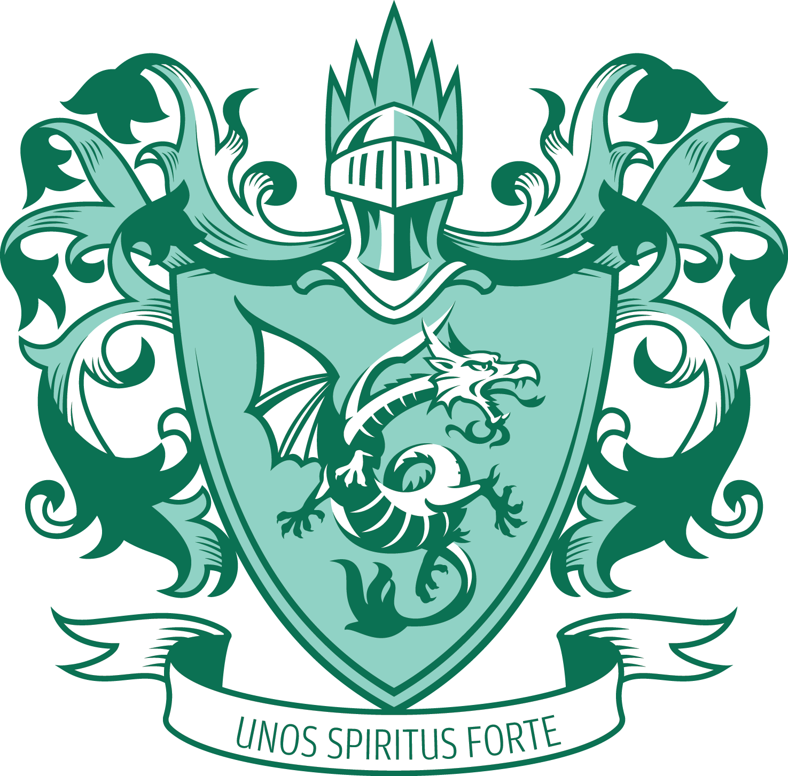
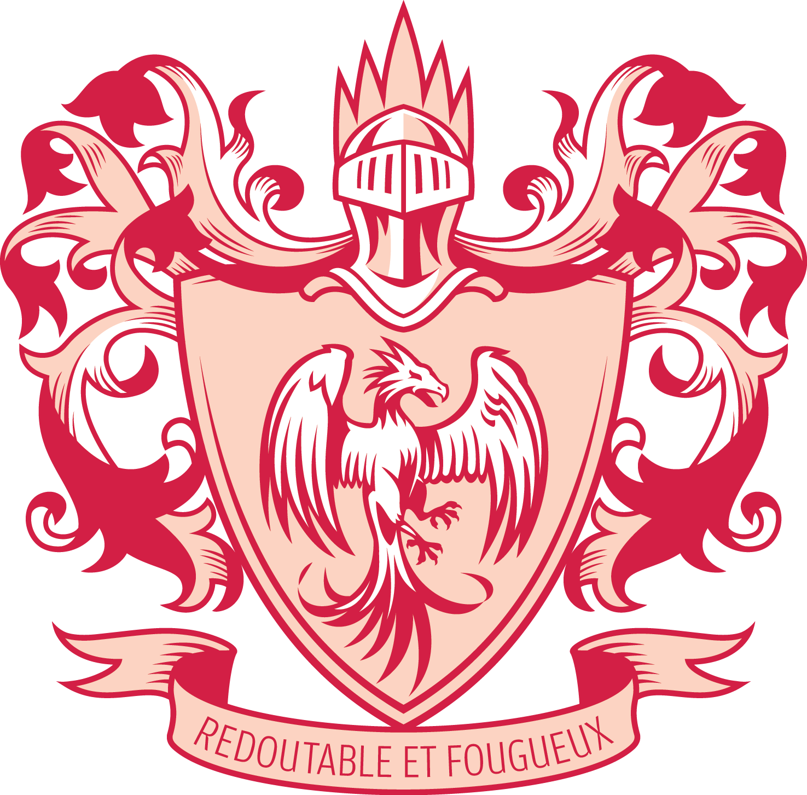
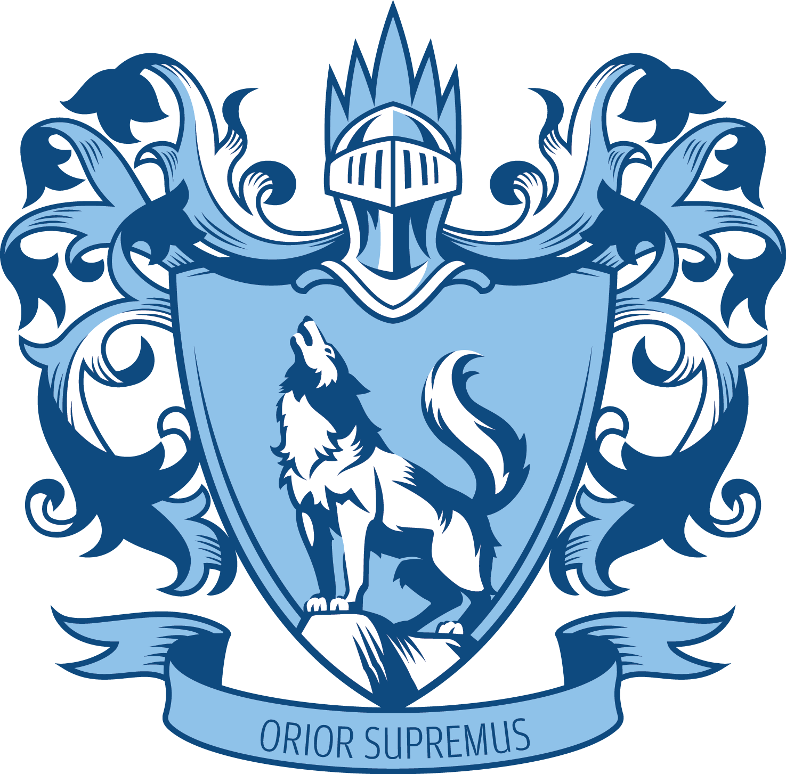

Bayley
John Barret Bayley was RI headmaster from 20 March 1857 to 1870. It was his untiring zeal and ability that brought the Institution ‘from a comparatively small and inferior school’ to ‘a large and flourishing establishment’, as recorded by the school’s trustees in 1870. Under his charge, the fledgling school’s enrolment increased from 130 to 410 and began to register notable academic achievements. The ‘Singapore Institution’ was renamed ‘Raffles Institution’ during his term.
In his final year his term, Bayley introduced a system of Pupil Teachers under which he personally trained two senior pupils for three years, with the view of qualifying them as Assistant Teachers at the end of their apprenticeship.
Bayley became a headmaster of a school in Sarawak after leaving RI. He passed away in England in 1893.

Buckley
Charles Burton Buckley was a member of the RI Board of Trustees from 1883 to 1900, and acted as Secretary from 1883 to 1888. He was a prominent resident in colonial Singapore with a keen interest in acting, music and cricket—he performed in many amateur theatricals and concerts, was a talented stage-manager, and frequently played cricket after work. He was the owner of Singapore's first motorcar, a 4.5 horsepower Benz Victoria he nicknamed ‘The Coffee Machine’.
Buckley was passionate about the welfare of young people and organised many events for them. Popularly known as the ‘Children's Friend’, he held Christmas parties for as many as 1,000 children annually from 1864 to 1911.
In March 1912, while travelling to England with Tunku Ismail, the eldest son of the Sultan of Johore, Buckley caught a chill from which he never recovered. He passed away on 22 May 1912. Buckley Road, near Newton Circle, was named after him.
Motto
Unos Spiritus Forte (‘One Strong Spirit’)
Hullet
Richmond William Hullett is our school’s longest-serving Principal (1871 to 1906), and was described by the Free Press as having had ‘more to do with the instruction of the youth of Singapore than anyone living, and probably more than any one person ever had.’ He developed RI into a secondary school, and established two feeder schools, one of which was Victoria School (then known as the Victoria Bridge School).
During school holidays, Hullett would embark on rather dangerous expeditions to collect and record exotic plants. One of these is the Bauhinia hullettii (also known as Bauhinia ferruginea var. ferruginea), which is featured in the centre of the Hong Kong flag.
Mr Hullett was popular amongst the boys—at his farewell ceremony on 27 September 1906, Dr Lim Boon Keng, a distinguished Old Rafflesian, gave a sincere appreciation of Hullett’s work. Hullett left a legacy that encompassed language, education, conservation, exploration and botany that has had a lasting impact on Southeast Asia, England, and beyond.
Motto
Fidei Defensor (‘Defender of the Faith’)

Moor
Headmaster Moor was the Headmaster of the Singapore Institution Free School, which moved to the renewed Institution Building in September 1839. A former editor of the Singapore Chronicle and the Free Press, Moor contributed largely in promoting a taste for reading in the settlement and the adjacent islands. He established Singapore’s first library in RI—this was to eventually become the origin of the National Library Board. Headmaster Moor obtained books from London publishers and then distributed them throughout the region, but it was so difficult collecting the money for books dispatched to neighbouring islands that he was constantly out of pocket.
J H Moor held the post of Headmaster until his sudden passing in May 1843. A large number of local people attended his funeral to mark the respect in which they held his character.
Motto
Redoutable et Fougueux (‘Fiery and Formidable’)

Morrison
Dr Robert Morrison is RI’s co-founder. He was a minister of the Presbyterian Church who helped set up the Anglo-Chinese College of Malacca and other Christian schools in the region. On 1 April 1823 Raffles met him and proposed his plan to set up the Singapore Institution, and together they worked closely to draw up plans and structures for it—to educate the sons of local people, to afford the means of instruction in local languages to such of the Company's servants as may desire it and to collect the scattered literature and traditions of the country, so as to understand the laws and customs, with a view to helping people.
Although the Institution building fell into disuse after Raffles’ passing, Dr Morrison, who was then based in China, contributed $1000 and promised to contribute an additional $400 as soon as the school building was actually used for education. ‘I would rather, even it were a hundred years hence, have the land and the building reserved for the original purpose of native education than for the sake of any object consent to alienate it,’ he wrote. Although Dr Morrison fell ill and passed away in August 1834, works to complete the RI building began, partly funded by the money he had bestowed. The Institution building was completed in 1837.
Motto
Orior Supremus (‘To Rise Above’)